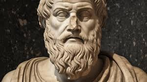
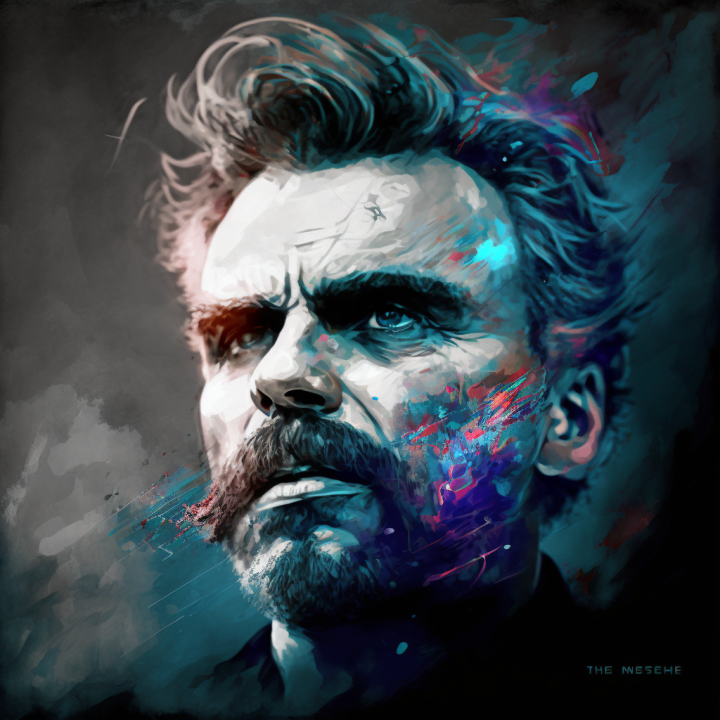
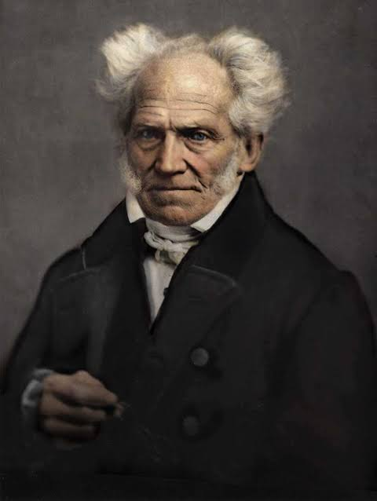
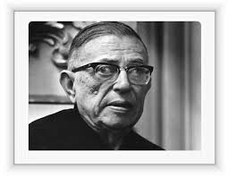

Socrates

Socrates was a Greek philosopher considered one of the founders of Western Philosophy. He is know for his contribution to the Socratic method of questioning, which sought to promote self-awareness and the search for truth.
Main Phrases of Socrates
- "Know yourself."
- "Life that is not examined is not worth living."
- "All I know is that I know nothing."
PS: Socrates never wrote a book, all his speeches were reported by his disciple, Plato
Plato
Plato was a Greek philosopher who was a disciple of Socrates and teacher of Aristotle. He is know for his works written in the form of dialogues, in which he explored a variety of themes, including ethics, politics, epistemology and metaphysics. Plato founded the Academy in Athens, one of the first institution of higher learning in the Western world.
Main Books of the Plato
-
The Republic
The Republic" is a fundamental work by Plato, in which he discusses issues of justice, politics and the nature of the soul, presenting the idea of the "ideal city" governed by philosophers.
-
The Banquet
The Banquet" is a dialog that discusses love and the nature of desire, featuring Socrates' famous speech on love.
-
Fédon
Fédon" is a dialog that describes Socrates' last moments and discusses the immortality of the soul and the nature of philosophy.
Main Phrases of Plato
- "The measure of man is what he does with power."
- "Necessity is the mother of invention."
- "Knowledge is the food of the soul."
Friedrich Nietzsche
Friedrich Nietzsche was a German philosopher know for his critique of traditional morality, his defense of individualism and his exploration of the concept of "beyond man." (Übermensch). Nietzsche profoundly influenced existentialism, nihilism and the Philosophy of the life.
Main Books of the Nietzsche
-
Thus Spoke Zarathustra
"Thus Spoke Zarathustra" is a philosophical work in the form of poetry, where Nietzsche presents the figure of the overman and discusses themes such as the will to power, morality, and the search for meaning in life.
-
Beyond Good and Evil
"Beyond Good and Evil" is a book where Nietzsche criticizes traditional morality and proposes a new vision of morality based on the will to power and the affirmation of life.
-
The Antichrist
"The Antichrist" is a work in which Nietzsche criticizes Christianity and its influences on Western culture, arguing that Christianity is a denial of life and the will to power.
Main Phrases of Nietzsche
- "What doesn't kill me only makes me stronger."
- "Good is dead."
- "You can only achieve great success when you stay true to yourself."
Arthur Schopenhauer
Arthur Schopenhauer was a German philosopher know for his pessimistic approach to human existence. He believed the life was permeated by suffering and that desire was the main source of this suffering. Schopenhauer significantly influenced Western Philosophy, especially existentialism and Western buddhism.
Main Books of the Schopenhauer
-
The World as Will and Representation
"The World as Will and Representation" is Schopenhauer's most famous work, in which he presents his philosophy of the will as the fundamental aspect of reality and the representation as our perception of the world.
-
On the Suffering of the World
"On the Suffering of the World" is a collection of essays where Schopenhauer explores the nature of suffering and its role in human existence.
-
The Wisdom of Life
"The Wisdom of Life" is a philosophical treatise in which Schopenhauer discusses the principles of happiness and fulfillment, emphasizing the importance of minimizing desires and embracing a contemplative life.
Main Phrases of Schopenhauer
- "Life is a constant deception."
- "Only two things are infinite: the universe and human stupidity. And I'm not sure about the universe."
- "The essence of philosophy lies in removing man from the will to live."
Jean-Paul Sartre
Jean-Paul Sartre was a French philosopher, writer and playwright know for his contribution to existentialism. He explored themes such as freedom, responsibility and the nature of human existence in his works. Sartre was an active social critic and an important figure in the intellectual life of the 20th century.f.
Main Books of the Sartre
-
Being and Nothingness
"Being and Nothingness" is Sartre's most famous work, where he explores the concepts of consciousness, freedom, and existential angst, arguing that existence precedes essence and that individuals are ultimately responsible for creating their own meanings.
-
Nausea
"Nausea" is a novel that explores themes of existential angst and the absurdity of human existence, following the experiences of a man who becomes overwhelmed by feelings of nausea and alienation in the face of the meaninglessness of life.
-
No Exit
"No Exit" is a play that explores existential themes through the interactions of three characters who are trapped in a room together for eternity, confronting each other's flaws and realizing the consequences of their actions.
Main Phrases of Sartre
- "Existence precedes essence."
- "We are condemned to be free."
- "The others are hell."